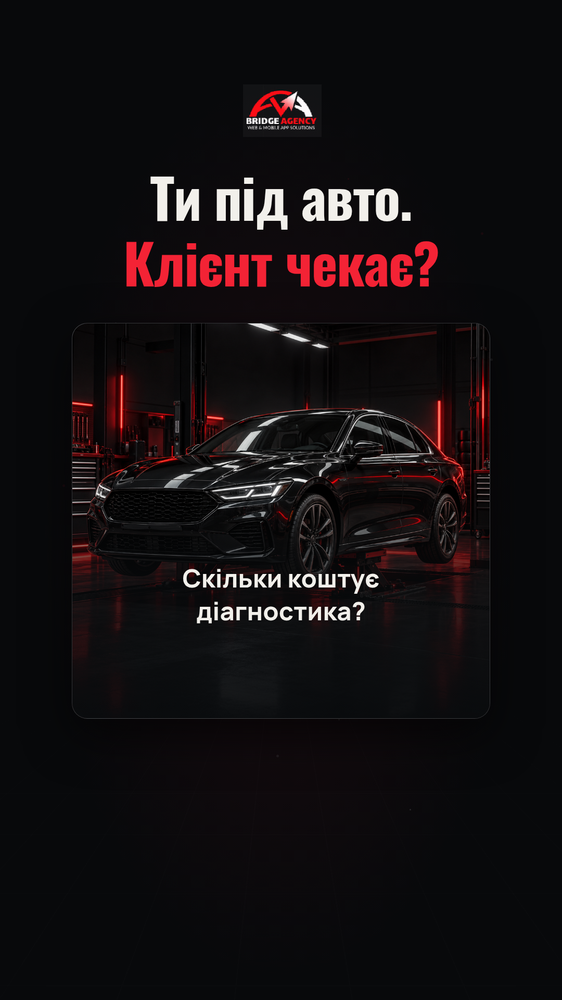
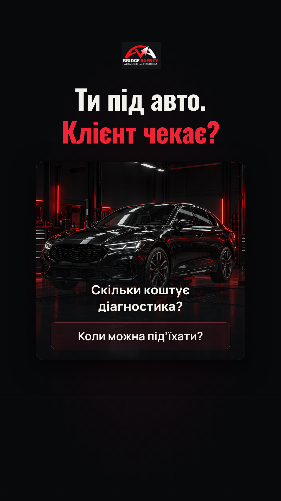
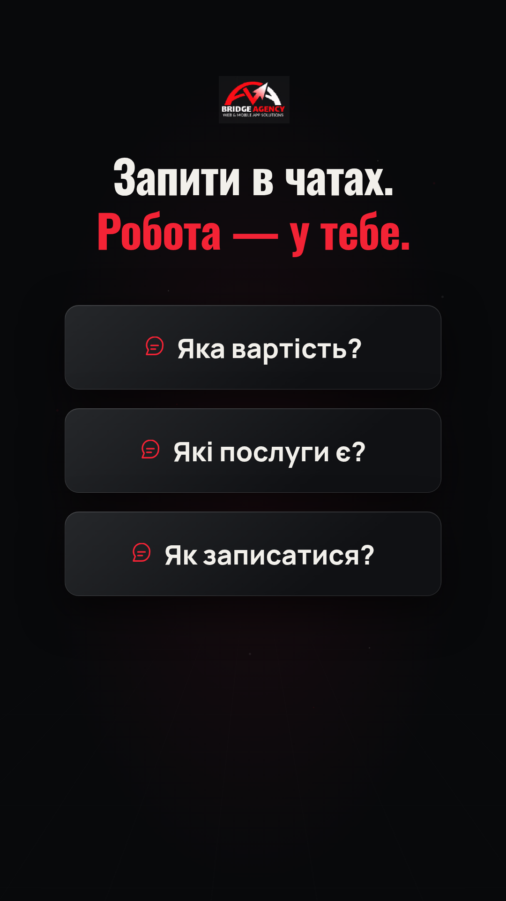
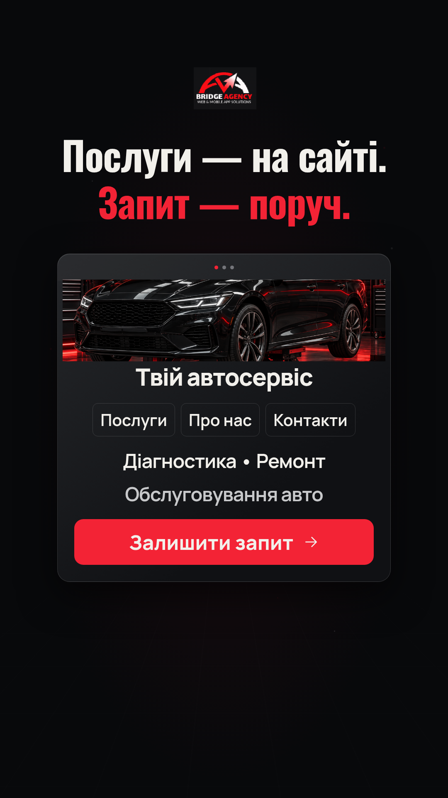
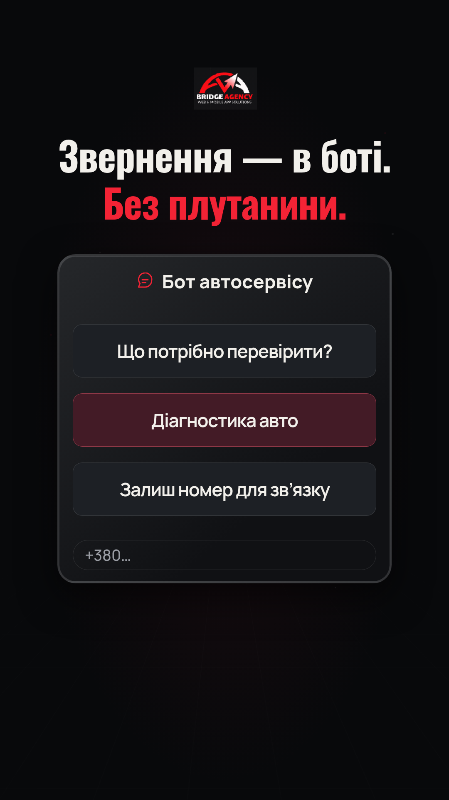
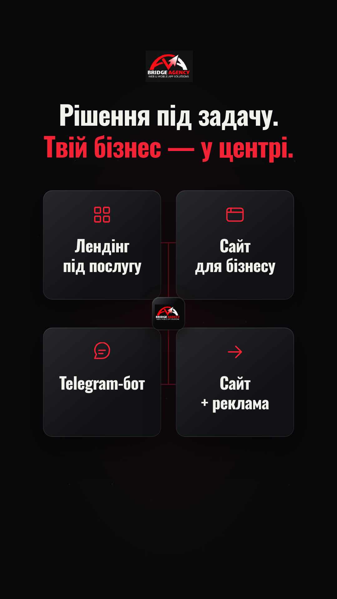
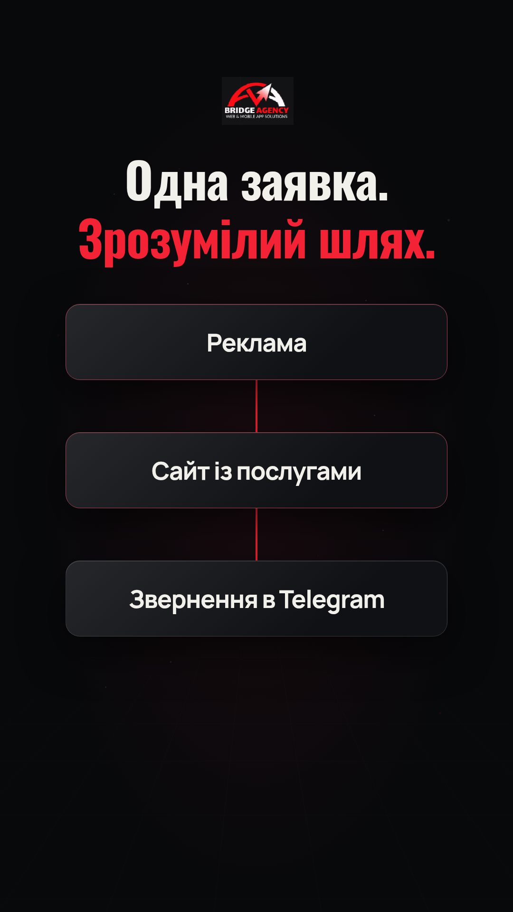
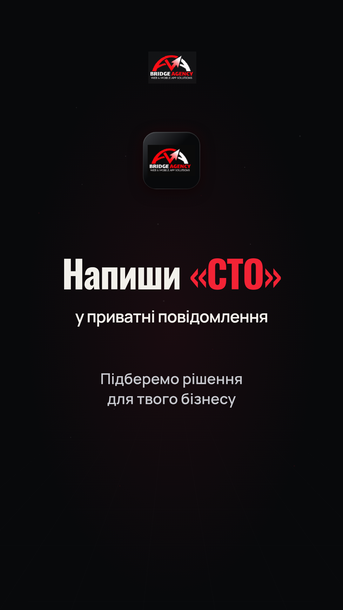

Макет наступного ролика: фінальний MP4 ще не створено. Таймінг попередній, субтитри додаються за новою озвучкою. У місцях нової іконки поки технічна заміна з PDF. Послуги взято з попереднього PDF; актуальний сайт недоступний із хмарного середовища.
Текст для озвучки · Сценарій і джерела







